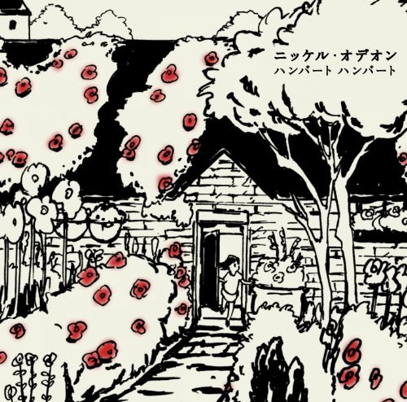
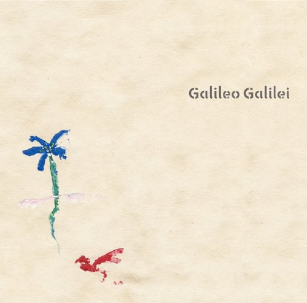

音乐
-
恋 (初回限定盤)听过 ★★★★★
-
生活倒影听过 ★★★★★
-
 TBS系 金曜ドラマ「妻、小学生になる。」オリジナル・サウンドトラック听过 ★★★★★
TBS系 金曜ドラマ「妻、小学生になる。」オリジナル・サウンドトラック听过 ★★★★★ -
こわれかけのオルゴール オリジナルサウンドトラック听过 ★★★★★
-
The Legend of 1900听过 ★★★★★
-
 La leggenda del pianista sull'oceano听过 ★★★★★
La leggenda del pianista sull'oceano听过 ★★★★★ -
 青い幸福／記憶のカケラ听过 ★★★★★
青い幸福／記憶のカケラ听过 ★★★★★ -
 もってけ！セーラーふく听过 ★★★★★
もってけ！セーラーふく听过 ★★★★★ -
 TVアニメ「ToHeart2」主題歌マキシシングル「Hello/トモシビ」听过 ★★★★★
TVアニメ「ToHeart2」主題歌マキシシングル「Hello/トモシビ」听过 ★★★★★ -
瞬間的シックスセンス听过 ★★★★★
-
生きていたんだよな听过 ★★★★★
-
愛を知るまでは/桜が降る夜は听过 ★★★★★
-
ドラマ「コントが始まる」オリジナル・サウンドトラック听过 ★★★★★
-
サマーウォーズ オリジナル・サウンドトラック听过 ★★★★★
-
道はつづく听过 ★★★★★
-
ルージュの伝言听过 ★★★★★
-
ひこうき雲听过 ★★★★★
-

ニッケル・オデオン听过 ★★★★★ -
SWEETS RESORT for J-POP HIT COVERS HIBISCUS听过 ★★★★★
-
SWEETS HOUSE~for J-POP HIT COVERS SHERBET~听过 ★★★★★
-
Happy End听过 ★★★★★
-
TBS系 火曜ドラマ「恋はつづくよどこまでも」オリジナル・サウンドトラック听过 ★★★★★
-
I LOVE...听过 ★★★★★
-
いま、会いにゆきます听过 ★★★★★
-
TBS系 火曜ドラマ「おカネの切れ目が恋のはじまり」オリジナル・サウンドトラック听过 ★★★★★
-
Raya and the Last Dragon (Original Motion Picture Soundtrack)听过 ★★★★★
-
Mulan (Original Motion Picture Soundtrack)听过 ★★★★★
-
 离人愁听过 ★★★★★
离人愁听过 ★★★★★ -
 出山听过 ★★★★★
出山听过 ★★★★★ -
The Greatest Showman听过 ★★★★★
-
老男孩听过 ★★★★★
-
VIOLET EVERGARDEN : Automemories听过 ★★★★★
-
終わりの惑星のLove Song听过 ★★★★★
-
 Olaf's Frozen Adventure (Original Soundtrack)听过 ★★★★★
Olaf's Frozen Adventure (Original Soundtrack)听过 ★★★★★ -
 Coco (Original Motion Picture Soundtrack)听过 ★★★★★
Coco (Original Motion Picture Soundtrack)听过 ★★★★★ -
 Legends of the Fall听过 ★★★★★
Legends of the Fall听过 ★★★★★ -
ピアノによる珠玉のアニメ映画主題歌集「いつも何度でも/もののけ姫」听过 ★★★★★
-
 宝莲灯听过 ★★★★★
宝莲灯听过 ★★★★★ -
《古剑奇谭》原声听过 ★★★★★
-
BEYOND THE MEMORY听过 ★★★★★
-
 Panorama Of Fall Colors Part.2听过 ★★★★★
Panorama Of Fall Colors Part.2听过 ★★★★★ -
Spirited Away听过 ★★★★★
-
 River Flows In You听过 ★★★★★
River Flows In You听过 ★★★★★ -

青い栞听过 ★★★★★ -
 言の葉の庭 サウンドトラック听过 ★★★★★
言の葉の庭 サウンドトラック听过 ★★★★★ -
言ノ葉听过 ★★★★★
-
空は高く風は歌う听过 ★★★★★
-
秒速5センチメートル オリジナルサウンドトラック听过 ★★★★★